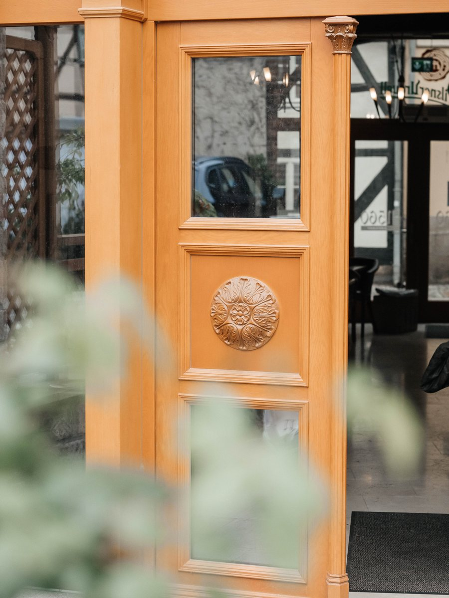

Das Bistro in Quedlinburg
Das BistroKiku ist da.
Als kleiner Bruder des Michelin-gelisteten Restaurant Kiku bringt es große Küche in lockerer Atmosphäre auf den Tisch.
Chef Jan Fribus interpretiert seine besten Rezepte neu - er backt außerdem Croissants, Brot und Kuchen täglich selbst und überrascht mit einem außergewöhnlichen Tagesangebot.
Frühstück. Lunch. Etwas zwischendurch.
Unkompliziert. Und in höchster Qualität.
Jeden Tag in der Steinbrücke - direkt am Marktplatz.
Wir freuen uns auf euch.

Frisch gebackenes Brot, feine Patisserie und große Aromen in lockerer Atmosphäre.
Speisekarte
Frühstück, Lunch und etwas für zwischendurch.


Jeden Tag in der Steinbrücke - direkt am Marktplatz.
Bonjour et bon appétit!
Wir freuen uns auf euch.
Steinbrücke 2
06484 Quedlinburg
Mittwoch - Sonntag
9:00 - 17:00
Montag-Dienstag
Ruhetag